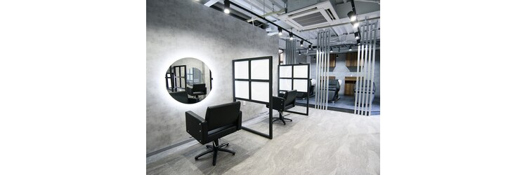
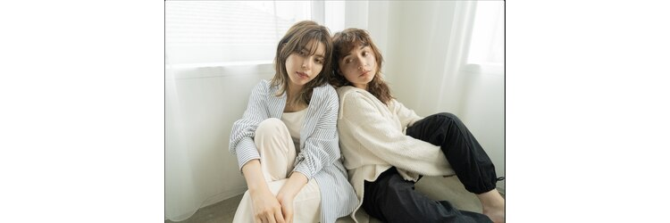
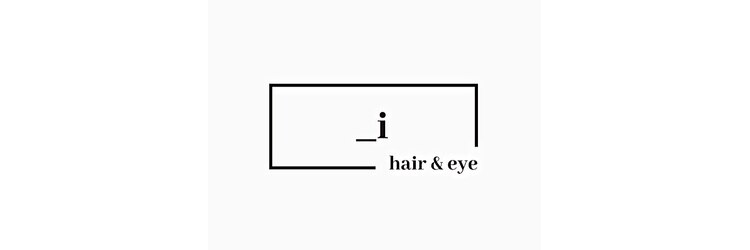

コンセプト
抽象的な「ナチュラル＋トレンド」から、顔周り・透明感・朝が楽という具体的な予約理由へ。
アイ
京都府京都市下京区東洞院通七条上る飴屋町259番
京都駅徒歩5分｜レイヤーカット／メンズパーマ／髪質改善



SALON MESSAGE
PICK UP FEATURE
HPBの特集枠として、悩みから自分に合うメニューへ進める7つの入口。
SALON COMMITMENT
COUPON
96件｜価格は現行ページと同額
HAIR STYLE
最初に差し替える12スタイル。画像・名前・説明を一組で使用できます。
BLOG
スタイルと同じテーマで検索入口を補強する10記事。
SALON DATA
REVIEWS
平均 4.77｜757件
仕上がり、丁寧なカウンセリング、接客、通いやすさの口コミが蓄積された人気店。改善後は口コミ依頼時に「悩み」「仕上がり」「家での扱いやすさ」を具体的に聞き、スタイルテーマと第三者評価を一致させます。
IMPLEMENTATION NOTES
抽象的な「ナチュラル＋トレンド」から、顔周り・透明感・朝が楽という具体的な予約理由へ。
烏丸ではなく、実際の商圏である「京都駅」を全ページの軸に統一。
おすすめ特集7枠と、こだわり2ページ・計20STEPを実際のHPB構造に合わせて分離。
価格・件数・メニュー内容は維持し、悩みと仕上がりが先に読める名称へ変更。
店名は広い軸に限定。全クーポンと各コンテンツには、広告として共通ワードをスラッシュ形式で掲載。
スタイルと同じ検索テーマで、似合う人・悩み・施術・ホームケアまで補完。
既存画像で足りない女性レイヤー、メンズニュアンス、推し活ヘアセットのみイメージを補完。
rue様から逆算した上限内で作成。個別コピーと、96クーポンを含む全原稿の一括コピーに対応。
※「追加撮影イメージ」と記載した3枚はAI生成の方向性見本です。実掲載時は同構図でサロン実績を撮影してください。